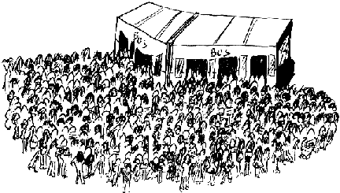

The quickest way to Bordeaux is to fly. You can get a fairly cheap ticket from the travel shop in the students' union building or Campus Travel. The main problem with flying is the luggage limit - 20-23 kg in your main luggage. They don't usually weigh your hand luggage so fill it up with heavy things like books.
The cheapest way is by coach. A single from Victoria coach station in London with Eurolines costs [sterling]57 this year. There is no weight limit although you're only supposed to have two cases. You're basically limited by how much you can carry.
The easiest way to get to Bordeaux is to convince someone, such as a parent, that they would love nothing more than to drive you there. There would also have the added advantage that you can take your hi-fi, bike, microwave, fridge, etc.
An alternative is to fly or get the train to Paris and then get the TGV from there.
If you're coming by car: take exit 16 direction Talence from the rocade (the Bordeaux motorway orbital), follow signs to Talence and then to the Domaine Universitaire .
There are two ways of getting from the airport to the campus by bus - the easy way and the hard way. The easy way is to get the Navette to Gare St. Jean , which costs a few quid, and then get a 7 or 8 to Place de la Victoire followed by an F from the stop outside bar Le Plana .
The hard way is to take the 73 from, the airport to Place Charles de Gaulle in Merignac and then cross the road to catch a 30 that's going towards Place Wilson, Talence . Get off at Village 1 for Village 1, Stadium Universitaire for Village 2 and Fontaudin for Village 3 . If you're going to one of the other halls you're better off just getting the navette to the station.
It's much easier to get a taxi, of course, but it costs about twenty quid.
There is a lot that you need to know about how the buses work in Bordeaux . As a student you can use the cheaper Tarif Réduit tickets but you need to have a Carte Bordeaux Etudiant which costs 30F for the year. If you do the language course in September you may get one when you register; otherwise you need to go to one of the offices of the CGFTE , the bus company, with your university student card and a passport photo. The tickets are very cheap and you buy them in advance in strips of ten at newsagents. Ask for un carnet de tickets de bus au tarif réduit . You can get copies of the timetables from the CGFTE shop or from the roving information bus that you sometimes see on the campus.

Queueing for the bus
|
When you get on the bus you have to stamp your ticket in one of the orange
machines. This puts the time and date on the ticket. You can stamp the
same ticket up to four times, to change bus, provided that the last time
stamp is within an hour of the first stamp. This also means that you can
get to Casino and back on one ticket if you're quick.
There are no individual ticket inspectors, but every now and then a whole group get on the bus at once to check tickets. If your ticket hasn't been stamped, is invalid or you don't have the Carte Bordeaux Etudiant and the talon that comes with each strip of tickets then you get an on the spot fine of 100F. You don't have to pay the fine, but if you decide not to, you will be dragged off the bus and marched into the police station.
PlanesFrom Bordeaux you can fly direct to Gatwick (British Airways) and Heathrow ( Air France ). With Air Inter you can fly to Paris very cheaply as an ISIC card gets you student prices on flights. The nearest equivalent to a Student Union Travel Shop is OTU Voyages on the side of RU2 , open 9.30 a.m. - 3 p.m., which is part of the Office de Tourisme Universitaire . There is also USIT Voyages at the end of Rue St. Catherine by Place de la Victoire which is the French version of Campus Travel.
BikesA bike is useful for getting around the campus but cycling on the roads is best left to the brave and the foolish. If you bring one make sure you've got a good lock and bear in mind that it's probably completely uninsurable. There aren't many things to lock your bike to either. A lot of people buy a cheapish second hand bike in Bordeaux .
TrainsThe TGV , the French Intercity, is a good way of getting about France if you want to go and visit people or whatever. If you book at least thirty days in advance you can buy a Joker 30 ticket which is far cheaper than the normal price. There is also a Joker 8 ticket if you book eight or more days in advance. If you can't book in advance to somewhere like Paris you may well be better off getting a cheap internal flight. You can also get a Carissimo pass which for 195F gives a 50% discount on four (single) journeys. On Friday and Sunday evenings, the F bus runs directly between the campus and Gare St. Jean |